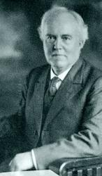

|
¡@ |
¡@ |
|
¡@1 Come, let us all unite to sing, Refrain: 2 O tell to earth¡¦s remotest bound, 3 What though our mortal flesh shall fail, 4 How happy is our portion here,
|
¡@ |
|
¡@ |
|
|
¡@ |
¡@ |


|
¡@ |
¡@ |
|
¡@1 Come, let us all unite to sing, Refrain: 2 O tell to earth¡¦s remotest bound, 3 What though our mortal flesh shall fail, 4 How happy is our portion here,
|
¡@ |
|
¡@ |
|
|
¡@ |
¡@ |

¡@
| Text: | Come, Let Us All Unite to Sing |
| Author: | Anonymous |
| Tune: | GOD IS LOVE |
| Composer: | E. S. Lorenz |
¡@
¡@
| First Line: | Come, let us all unite to sing, God is love |
| Title: | Come, Let Us All Unite To sing |
| Author: | Howard Kingsbury |
| Meter: | 11.11.8.8.4.6.8.4 |
| Language: | English |
| Refrain First Line: | God is love, God is love |
| Copyright: | Public Domain |
| Short Name: | Howard Kingsbury |
| Full Name: | Kingsbury, Howard, 1842-1878 |
| Birth Year: | 1842 |
| Death Year: | 1878 |
Kingsbury, Howard. This name is associated with the popular hymn in days gone by, "Come, let us all unite and sing, God is love!" (God is Love), but concerning the same we have failed to gain any information. We know personally that the hymn was in common use nearly forty years ago (circa 1850).
--John Julian, Dictionary of Hymnology, Appendix, Part II (1907)
| Short Name: | Edmund S. Lorenz |
| Full Name: | Lorenz, Edmund S. (Edmund Simon), 1854-1942 |
| Birth Year: | 1854 |
| Death Year: | 1942 |
Pseudonymns: John D. Cresswell, L. S. Edwards, E. D. Mund,

Words: Author unknown
Music: Edmund Simon Lorenz (b. July 13, 1854; d. July 10, 1942)
Links:
Wordwise Hymns (none)
The Cyber Hymnal
Hymnary.org
Note: The authorship of this hymn, first appearing around 1812, is not known. One hymn book credits it to Charles Wesley, and Hymnary.org to Richard Jukes. The Cyber Hymnal states that some have erroneously attributed it to Howard Kingsbury. Most books have it as anonymous.
The Battle Cry of Freedom was one of the most popular songs in the North, during the American Civil War. It called one and all to ¡§rally ¡¥round the flag¡¨ fighting to support the union of the States, and an end to slavery (¡§Although they may be poor, not a man shall be a slave¡¨). In every Union encampment, the men were singing it. And printing it kept fourteen printing presses going, until nearly three quarters of a million copies had flooded the land.
The song was written in 1862 by George Frederick Root (1820-1895), a music teacher, organist, and composer. A committed Christian and hymn writer, Mr. Root¡¦s name is in many of our hymn books (e.g for the words and music for Come to the Saviour, and the music for William Cushing¡¦s When He Cometh).
But it is not Root¡¦s Civil War song we¡¦ll look at now, but rather the concept it expresses. In the heat of battle, the call to ¡§rally round the flag¡¨ can draw beleaguered troops together, and rouse them to renewed and vigorous action. Fans rallying to support their favourite team for a critical game can fill stadiums or arenas, as that sometimes happens for the supporters of a political candidate. There can be more noble examples of rallying too.
In 1980, Canadian athlete and activist Terry Fox, who¡¦d had one leg amputated due to cancer, decided to run across Canada to raise money for cancer research. His goal was to raise a dollar for each of Canada¡¦s twenty-four million people (the population at the time). Starting from the east coast, he ran across the land, incredibly covering the distance of a marathon each day for one hundred and forty-three days, a feat that may never be equaled.
The young man is a true national hero, the youngest person ever named a Companion of the Order of Canada. Sadly, at Thunder Bay, Ontario, Terry was forced to give up the run as the cancer had spread to his lungs. Months later, he died. But was that the end of the story? No! Since 1981, the annual Terry Fox Run has involved multitudes of Canadians, and it¡¦s being held in sixty other countries too, raising over six hundred and fifty million dollars for the cancer research cause. That is rallying round the flag!
In Christian experience there¡¦s a rallying that takes place Sunday after Sunday in our churches. The people of God come together to worship and praise Him, and to hear the proclamation of His Word. One of our most common themes is the love of God. The love that moved the Father to send the Son of God to the cross, to take the punishment for our sins.
¡§For God so loved the world that He gave His only begotten Son, that whoever believes in Him should not perish but have everlasting life¡¨ (Jn. 3:16). That act of love is made personal when we trust in Christ as our Saviour. As the Apostle Paul put it, ¡§the Son of God¡Kloved me and gave Himself for me¡¨ (Gal. 2:20).
That is the theme of a song whose authorship is uncertain, thought it¡¦s credited to various ones in our hymn books. It¡¦s a call to believers to rally together and unite in songs of praise for God¡¦s wonderful love.
CH-1) Come, let us all unite to sing: God is love!
Let heav¡¦n and earth their praises bring, God is love!
Let every soul from sin awake,
Let every heart sweet music make,
And sing with us for Jesus¡¦ sake: God is love!
God is love! God is love!
Come let us all unite to sing that God is love.
CH-2) O tell to earth¡¦s remotest bound, God is love!
In Christ we have redemption found, God is love!
His blood has washed our sins away,
His Spirit turned our night to day,
And now we can rejoice to say: God is love!
There will be a great and unparalleled rallying of the saints in eternity too, praising ¡§Him who loved us and washed us from our sins in His own blood¡¨ (Rev. 1:5; cf. 5:11-12). The final stanza of the hymn anticipates that day. (I have changed the word ¡§Canaan¡¨ to ¡§glory¡¨ in the first line, as several hymn books have done¡Vother books use the word ¡§Zion.¡¨)
CH-4) In Glory we will sing again: God is love!
And this shall be our loudest strain: God is love!
Whilst endless ages roll along,
We¡¦ll triumph with the heavenly throng
And this shall be our sweetest song: God is love!¡¨
Questions:
1) What are the kind of people and causes the world often rallies around?
2) What are some common things that are beloved, or common goals, that bring Christians together?
Links:
Wordwise Hymns (none)
The Cyber Hymnal
Hymnary.org
https://wordwisehymns.com/2016/04/13/come-let-us-all-unite-and-sing/